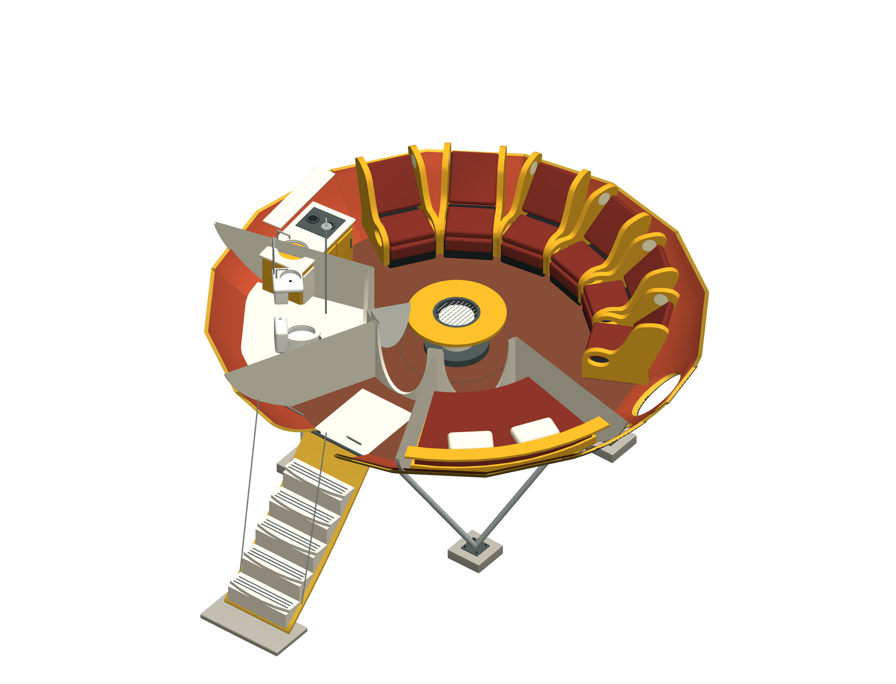
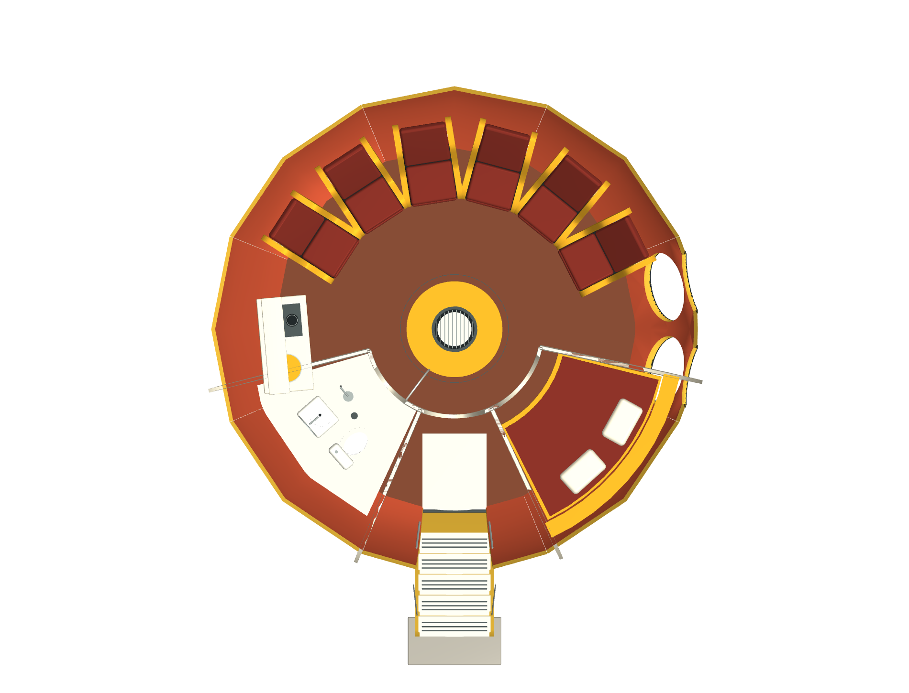

From streamlined forms to the Space Age
A flying saucer for everyday life
Designed by Finnish architect Matti Suuronen and introduced in 1968, Futuro began as a skiing lodge that could be heated quickly and assembled on difficult terrain. Its elliptical plastic shell turned a small holiday house into an image of Space Age optimism.
Futuro belongs to the late 1960s, after the main Streamline Moderne period. It appears here as a related exploration of curved forms, new materials and futuristic living. The design attracted international attention, including in the United States. Read the history at Exhibition Centre WeeGee.
Interactive architectural study
Explore the house
Drag to orbit, scroll to zoom, and Shift-drag or right-drag to pan. Choose Exterior, Roof off, Cutaway, Plan or Exploded roof. The assembly controls reveal individual parts of the interior.
The roof lift is an inspection aid in this model, not a moving feature of the original house. If 3D is unavailable on your device, explore the rendered views below.
Inside the oval shell
The reconstruction includes six radial recliners, a central fireplace and table, a sleeping alcove, a kitchenette and a bathroom. Oval glazing, curved partitions and the lowered stair show how the furnishings fit into the compact shell.
This is a Finnish-type interpretation supplied in the Futuro House 3D package. It is not a measured replica of a particular surviving house; furniture, partitions and supports are approximate. The model is for visual study, not construction.
Three ways to look closer
Exterior, interior and plan
{kind=link}
{kind=link}

{kind=link}

Images are renders of the supplied reconstruction, not photographs. Select an image to view it at full size.
Sources and model notes
- City of Espoo · Futuro House at Exhibition Centre WeeGee
- Supplied model documentation, interpretation notes and research references
Explore more
Streamline Moderne · Googie architecture · Streamlined design · All architecture